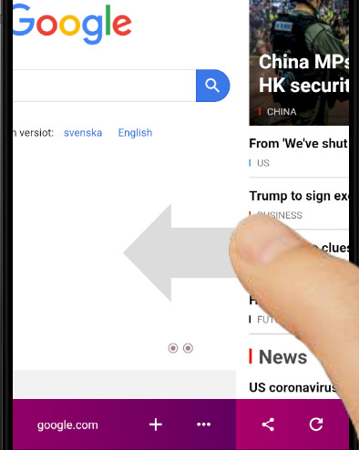
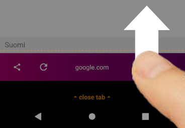

Best browser app for gestures?
Here are some features of the fishpowered browser that are great for people who like browsing quickly and easily with one hand…
Swipe down to reach the top of the screen
Like to use the phone one-handed but struggle to reach links at the top of the screen? Simply swipe down when the page is scrolled to the top and the screen will pull down to be within easy reach.
Swipe to change tabs

Swipe from the edges of the screen to quickly and easily change tabs with one hand.
Swipe up to close tabs

Swipe up from the navbar to quickly close a tab with one hand.
Customisable gestures
Configure the gestures and other button bindings to your taste in the settings area.